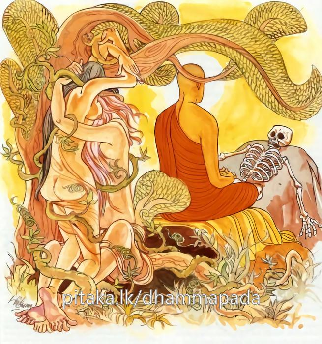

8-12 පටාචාරාවට සිදු වූ විපත
මෙම කතාව ධම්මපද අටුවාවෙන් ද කියවන්න.
යො චෙ වස්සසතං ජීවෙ අපස්සං උදයව්යයං
එකාහං ජීවිතං සෙය්යො පස්සතො උදයව්යයං.
(පංචස්කන්ධයන්ගේ) උදයව්යයය නොදක්නා වූ (හෙවත් ‘අවිජ්ජාසමුදයා රූපසමුදයෝ’ යන ආදීන් පස්විසි අයුරින් පංචස්කන්ධයන්ගේ උදයය ද ‘අවිජ්ජා නිරෝධා රූපනිරෝධො’ යන ආදීන් පස්විසි අයුරින් පංචස්කන්ධයන්ගේ ව්යයය ද නොදක්නාවූ) යම් පුඟුලෙක් ඉදින් හවුරුදු සියයක් ජීවත් වූයේ නමුදු (ඔහුගේ ජීවත් වීමට වඩා) පංචස්කන්ධයන්ගේ උදයව්යයය නුවණැසින් දක්නාහුගේ එක් දවසෙක ජීවත් වීම උතුමි.

එදා සැවැත් නුවර සතළිස් කෝටියක් ධනය ඇති එක්තරා මහාසිටුකුලයෙක දුවක් වූ ය. ඕ පටාචාරා තොමෝ ය. හැඩහුරු කමින් හා රූසපුවෙන් දකින්නන්ගේ සිත් ඇද ගත්තා ය. දහසය හැවිරිදි වයසට ලඟාවත් ම දුරාචාරයන්ගෙන් වළකනු පිණිස, නො හැඳුනු තරුණයන්ගෙන් රැක ගන්නට මාල් සතකින් යුත් සිටුමැදුරෙහි මතුමාලෙහි ඈ වාසය කරවූහ. එහෙත් ඕ තොමෝ සියගෙයි මෙහෙකරු වූ කොලු ගැටයකු හා පෙම්බැඳ රහසිගත ව ඌ හා ම ලිඞ්ගිකසම්බන්ධයෙන් කල් දවස ගෙවූ ය.
මවුපියෝ මේ රහස් හැසුරු ම ගැන කිසිත් නො දත්හ. එහෙයින් ඔවුහු, ඇය තම කුලයට හා වස්තුවට සරිලන කුලයෙක සිටු තරුණයකුට අඹු කොට දෙන්නට, නැකැත් බලා දවස් නියම කර ගත්හ. මගුල් දවස ඔන්න මෙන්න කියා තිබිය දී පටාචාරා තොමෝ තම සොරයහළුවා ලඟට ගෙන්වා, “සොඳුර! මා අසුවල් සිටුතරුණයාට අඹු කොට දෙන්නට මවුපියන් නියම කර ගෙණ තිබේ, මා, මවුපියන් නියම කර ගෙණ ඇති ලෙසට ඔහුට අඹු කොට දුන්නොත්, ඔයාට එහි එන්නට වත් ඉඩ නො ලැබේ, ඒ නිසා මා ගැණ බලාපොරොත්තුවක් තිබේ නම්, අද රෑ ම කැමැති තැනකට ගෙණ යන්නැ” යි කිවු ය.
එවිට කොලූගැටයා “හා! මම හෙට පාන්දරින් ම එලිය වැටෙන්නට පෙර අවුත් නුවරගේට්ටුව ලඟ සිටින්නම්, ඔයා කාටත් නො දැනෙන්නට පාන්දරින් නැගිට එන්නැ” යි කී ය. කොලුගැටයා කතා කර ගත් ලෙසට පසු දා උදෑසන එතැනට පැමිණියේ ය. පටාචාරා ද කොයින් දෝ සොයා ගත් තැන තැන ඉරීගිය කිලිටි රෙදිමාලු කඩක් ඇඳ, කෙස් ලිහා අවුල් කොට බැඳ, ඇඟ දූලි ගා ගෙණ, කළයකුත් අතට ගෙණ දාසීන් සමග ලිඳට යන්නියක සේ ගෙන් නික්ම කොලුගැටයා කියූ තැනට ගියා ය. ඌ ඇය ගෙණ ඉතා ඈත පළාතකට ගොස් අප්රසිද්ධ ගමෙක නවාතැන් ගත්තේ ය.
එහි දෙදෙන එක් ව වෙල් කොටමින් සීසාමින් දරපලා විකුණමින් ඉතා දුකසේ දිවි ගෙවූහ. පටාචාරා සියතින් දිය ඇද, වී කොටා, කෑම බීම පිළියෙල කරමින් හිමියා සතප්පන්නී, කල් නො යවා ම පෙර කළ අකුශලයෙක විපාක විඳින්නට පටන් ගත්තා ය. කල් යත් කුසැ දරු ගැබෙක් ද හට ගත්තේ ය.
එයින් ඕ වඩාත් දුකට පත් වූ ය. දරු ගැබ ද ක්රමයෙන් මුකුරා ගියේ ය. දරු බිහිවන්නට ලං වූ විට පටාචාරා තොමෝ, “අපට මෙහි උපකාර කරන්නෙක් නැත, කොතරම් වරදක් කළත් මවුපියෝ දූ පුතුන් කෙරෙහි ආදරය ඇත්තෝ ය, මොළොක් සිත් ඇත්තෝ ය, ඒ නිසා, මා මාගේ මවුපියන් වෙතට ඇරලන්න, එහි දී ගැබ්බරින් සැහැල්ලු වෙමි” යි කිවු ය. එවිට ඒ පුරුෂ තෙමේ “සොඳුර! කුමක් කියහි ද, මා එහි ගියොත් ඔයාගේ මවුපියන් මා දෙ පලු කරණු ඇත, මා අල්ලා හැම වධබන්ධනයක් ම කරණු ඒකාන්ත ය, එහෙයින් මට එහි යනු නො හැකි” යි, ගමන වැළකූයේ ය.
පටාචාරාව තවත් කිහිපවරක් මවුපියන් වෙත යන්නට කීව ද, ඔහු එය වැළකූයේ ය. දිනක් තම හිමියා දරපලා පිණිස වනයට ගිය කල්හි, “අපේ එක්කෙනා මා නො දැක, කොයි ගියා දැ යි ඇසුවොත්, මා, මවුපියන් වෙත ගිය බව කියන්නැ” යි අසල ගෙවල වැස්සන්ට කියා දොර අටවා බැඳ තබා, එතැනින් නික්ම ගියා ය. වනයෙන් දරපලා ගෙණ පෙරළා ආ ස්වාමිපුරුෂ තෙමේ ඇය නො දැක අටවා තුබූ දොර හැර බලා, අසල්වැස්සන් විචාරා දැන, ඇය ලුහුබැඳ දිවී ය. දුව ගොස් ඇය නවතා, “ගෙදර නො යව” යි නොයෙක් ලෙසින් කියා සිටියේ ය. ඒ අතර ම විලි පහරන්නට වි ය. ඕ ගසක් යටට ඇදී හඬමින් මොර දෙමින් බිම පෙරැළි පෙරැළී පස් කටින් ගණිමින් දරුවකු වැදූ ය. ගෙට යෑමේ බලාපොරොත්තු ව අතර මග දී සිදු වූ බැවින් දෙදෙන ම දරුත් ගෙණ පෙර විසූ තැනට ම පැමිණියහ.
එයින් ටික දවසක් ගිය තැන තව දරු ගැබෙක් හට ගත්තේ ය. ඒ වරද වදන්නට ගෙදර යන්නට අවසර ඉල්ලා නො ලැබුනු බැවින් ස්වාමිපුරුෂයා ගෙයි නැති වේලාවක් බලා දරුත් වඩා ගෙණ මග බැස ගෙදර බලා ගියා ය ස්වාමිපුරුෂයාත් පළමු සේ ලුහුබැඳ ගොස් ගමන වළකා ලන්නට කරුණු කී ය. මේ අතර ඔවුන් මග සිටිය දී මහවැස්සෙක් වසින්නට වන. මුළු අහස විදුලි එලියෙන් ඇවිළ ගත්තා සේ විය. විදුලි කෙටුමෙන් මුළු පොළොව දෙදරන්නට වන. ඒ වේලෙහි බඩරුදා හටගෙන විලි පහරන්නට වි ය. එවිට ඕතොමෝ “හිමිය! හිමිය! බඩ රිදෙයි, ඉවසනු නො හැකි ය, නො තෙමෙන තැනක් සොයා කියන්නැ” යි, මොර දුන්නී ය.
ස්වාමිපුත්ර තෙමේ ඔබිනොබ බලා අත තුබූ පොරොවෙන් තුඹසක් මත තුබූ වනරොදක් කපා පිළියෙල කරන්නේ, තුඹසෙහි හුන් නයකු විසින් දෂ්ට කරණ ලද්දේ, මුළු සිරුර විෂ පැතිරී එ තැන ම මැරී වැටුනේ ය. පටාචාරා ව මහදුක් විඳිමින් හිමියා එනු බලා සිටින්නී, තවත් පුතකු වැදූ ය. දරු දෙදෙන, වැසි සුළං ඉවසනු නො හැකි ව මහහඬින් හඬන්නට වූහ. ඒ වර ඇය දරු දෙදෙනා බඩතුරෙහි තුරුල් කොට දෙ දණත් දෙ වැලමිටත් බිම ඔබා රාත්රිය ගෙවු ය. ඇයගේ සිරුර සුදු මැලි විය. පාන් වූ සැටියේ ම උපන් ලේවන් වූ මස්වැදැල්ලක් සේ සිටි ඒ පුතු උකුලට ගෙණ අනිකාගේ ඇඟිල්ල අල්ලා ගෙණ, හිමියා සොයන්නට හිමියා ගිය අතට ගියා ය. එසේ යන්නී, තුඹස මත මැරී වැටී තුබූ හිමියාගේ ලේ පැහැති තද සිරුර දැක, “අය්යෝ! මා නිසා මාගේ හිමියා මග මළේ ය” යි හඩමින් දරු දෙදෙනාත් ගෙණ මග බැස ගියා ය.
එදා මුළු රැය වැස්සා වූ වැසි දියෙන් අචිරවතී ගඟ තන පමණට පිරී ඉතිරි තුබුනේ ය. මඟ බැස යන ඇය ඉදිරියෙහි තුබූ ඒ ගඟ දැක ඉන් එතෙර වන්නට අපොහොසත් වුවා, වැඩිමහල් පුතු මෙගොඩ සිටුවා බාලපුතුත් ගෙණ ගඟෙන් එගොඩ වී ඒ දරු එහි කොළඅතු කඩා දමා, ඒ මත නිදි කරවා, වැඩිමහල් පුතු ගෙණෙන්නට නැවතත් ගඟට බැස්සා ය. බාලපුතු කෙරෙහි වූ නො ඉවසිල්ලෙන් වරින් වර පිටිපස බල බලා යන්නී, ගඟ මැද දී අහසේ යන උකුස්සෙක් ගංඉවුරෙහි කොළ අතු මත නිදා හුන් ලේ කැටි දරු දැක, මස්වැදැල්ලෙකැ, යි සිතා, ඒ තැනට පාත් විය. ඕ තොමෝ ඒ දැක, දෑත ඔසොවා, “සූ සූ” යි තෙවරක් මහහඬින් කෑ ගැසූ ය. අහස ඉතා දුර සිට උකුසු තෙමේ ඒ නො සලකා බිමට බැස, ලදරුවා ඩැහැ ගෙණ අහසට නැංගේ ය. මෙගොඩ සිටි වැඩිමල් පුතු ද මවු ගඟ මැද සිට, දෙ අත ඔසොවා, මහ හඬින් කෑ ගසන බව දැක, තමන්ට කතා කරන්නී ය, යි සිතා දුවැවිත් ගඟට බැස්සේ ය. කිසිත් හසරක් නො දත් ඒ කුඩා දරු ජල වේගයට හසුව දියෙහි ගැලී ගියේ ය.
එ කල ඕ තොමෝ “අනේ! මාගේ එක් පුතෙක් උකුස්සකු විසින් ගෙන යන ලද්දේ ය, එකෙක් දියෙහි ගැලී ගියේ ය, මාගේ හිමියා අතර මග මළේය, අන් දෙයියනේ! මේ විපත කාට කියම් ද, මම තනි වීමි, කොයි යෙම් ද, කුමක් කරම් ද, අනේ! මට දෙය්යන්ගේ පිහිට ය, මට පිහිට වන්නට වෙනකෙක් නැත, දෙය්යනේ! මා රැක ගන්න, මා බලා ගන්න, මට පිහිට වන්න, කෝ හෙවනක්, කෝ කෑමෙක්, කෝ ඇඳුමෙක්, කෝ ඉණකඩෙක්, මොකද මේ මට වුණේ, මොකක් ද මේ විපත, මොකක් ද මේ විපාක ය, මොකක් ද පාප ය, මොකක් ද කරුමය” යි කියමින් හඩමින් මග යන්නී, සැවැත් නුවරින් එන මිනිසකු දැක ඔහුට ලං ව, “කොහි සිට එවු දැ” යි ඇසූ ය. “අම්මේ! මම සැවැත්නුවර සිට එමි” යි ඔහු කී ය. “සැවැත්නුවර මා දන්නා හඳුනන පවුලක් අසුවල් කඩපලට නො දුරෙහි ඇත, ඒ පවුල ගැන තමුසේ දන්නහු දැ” යි ඇසූ විට, “ඔව්, මම ඒ පවුල හොඳට හඳුනමි, ඒ ගැන කිසිවක් ඇසිය යුතු නො වේ, අනිකක් ගැණ දැන ගන්නට වුවමනා නම්, ඒ අසව” යි මගියා කීයේ ය. “මට වුවමනා ඒ ගෙදර ගැණ ම දැන ගැණිම ය. අනෙකකින් මට වැඩෙක් නැත, කරුණාකර එහි තොරතුරු කියන්නැ” යි ඕ තොමෝ මගියාට බල කළා ය.
එවිට ඒ මගී පුරුෂ තෙමේ “අම්මා බල කර කර අසන නිසා කියනු මිසක්, ඒ ගැණ යමක් කියන්නට මා කැමැති නැත, ඊයේ මුළු රැය ම වැසිවටබව අම්මා දන්නවා, නො වේ දැ” යි ඇසී ය. “ඔව්, දනිමි, ඊයේ වැසි වැස්සේ මට ය, අනෙකෙකුට නො වේ, මා හඳුනන ඒ සිටුගෙදර තොරතුරු කියන්නැ” යි. ඕ තොමෝ නැවතත් කිවු ය. එවිට ඔහු “ඊයේ වැහි වහිද්දී සිටානන්ගේ ගෙය සහමුලින් බිඳ වැටුණේ ය, ගෙයි තිබූ සියලු දේ විනාශ වී ගියේ ය, මොකවත් ඉතිරි වූයේ නැත, සිටු, සිටුඅඹු, සිටුපුත් යන ති දෙන ම ගෙට යටවී මළහ, අද ඒ මළ සිරුරු තුන එක් ම සැයෙක ලා දවන්නාහ. අර පෙනෙන්නේ ඒ සෑයෙන් නගින දුම ය” යි කියත් ම ඇය ඇඳ සිටි රෙදිමාල්ල ඉණෙන් ගිලිහී වැටුන් ය. ඕ තොමෝ ඒ නො දැන නිර්වස්ත්රව සීසන් නැති ව;
“දෙපුත් කලුරිය කළෝ - මළේ මඟ මාගේ හිමි,
තිදෙන මවුපිය සොහොයුරු - දැවෙත් දැන් එක සෑයේ.
.
දෙපුත් කලුරිය කළෝ - මළේ මඟ මාගේ හිමි,
තිදෙන මවුපිය සොහොයුරු - දැවෙත් දැන් එක සෑයේ” යි
මෙසේ කියමින් හඬමින් වැලපෙමින් තැන තැන ඇවිදින්නී ය. මිනිසුන් ඇය දැක පිස්සියකැ යි කියා කුණු කසළ හිස දමන්නට පස්වැලි ඇඟ ලන්නට ගල්මුල් වලින් පහර දෙන්නට පටන් ගත්හ.
දිනෙක බුදුරජානන් වහන්සේ පිරිස් මැද ධර්මාසනාරූඪ වි දහම් දෙසන සේක්, ඉදිරියෙහි එන ඇය දුටු සේක. එසේ ම කල්ප ලක්ෂයක් මුළුල්ලෙහි පිරූ පෙරුම් ඇත්තියකැ, යි ද උන්වහන්සේට පෙනී ගියේ ය.
පියුමතුරා බුදුරජානන් වහන්සේ තමන් වහන්සේගේ ශාසනයෙහි එක් ස්ථවිරාවක්, දෙයතින් ඔසොවා නදුන් වනයෙහි තබන්නහු සේ එතදග්රස්ථානයෙහි තැබූ සේක. එදා ඒ දුටු මෝ තොමෝ, “කවදා නමුත් මමත් ඔබ වහන්සේ වැනි බුදු කෙනෙකුන් වෙත දී විනයධරසථවිරාවන් අතුරෙහි අගතැන් පත් වන්නෙමි” යි පැතූහ. එවිට බුදුරජානන් වහන්සේ ඉදිරියෙහි වන දෑ බලන නුවණ මෙහෙයා බලා මෑගේ මේ පැතීම, මුදුන් පැමිණෙන බව දැක ඒ පිරිස් මැද දී ම, මෝ තොමෝ මතු එන කාලයෙහි ගෞතම බුදුරජුන්ගේ ශාසනයෙහි පටාචාරා යන නම් ලබා විනයධර ස්ථවිරාවන් අතර මුල් තැනට පත්වන්නී ය, යි වදාළ සේක.
පියුමතුරා බුදුරජුන් ඉදිරියෙහි එදා දෑ කළ මේ පැතුම දුටු අපගේ ස්වාමි දරු වූ සම්මා සම්බුදුරජානන් වහන්සේ, මෑට පිහිට වන්නට මා හැර අනෙකෙක් මෙලොව කො තැනෙකත් නැත, එහෙයින් මා ම, මෑට පිහිට විය යුතු ය, යි විහාරයට එන ලෙස ඉටූ සේක. ධර්මශාලාවෙහි බණ අසමින් හුන් පිරිස ඇය දැක, “මේ අර තැන තැන ඇවිදින පිස්සී, මෑට මෙහි ඇතුල් වන්නට ඉඩ නො දිය යුතු ය” යි නැගී සිටි කල්හි, බුදුරජානන් වහන්සේ, “මෙහි එන්නට ඉඩ හරින්න, මෑගේ මෙහි ඊට නො වළකාලිය යුතු ය, මෙහි එන්නට ඉඩ හැරිය යුතු ය” යි වදාරා ලඟට ආ කල්හි, “සහෝදරිය! සිහිය ලබව” යි වදාළ සේක.
එ කෙණෙහි ම ඕතොමෝ සිහිය ලැබූ ය. ඒ වේලෙහි ඉණ ඇඳ තුබූ රෙදිකඩ කඩා වැටී ඇති බව දැක විලිබිය ඇත්තී, එ තැන ම බිම දණ ගැසුවා ය. එවිට එහි සිටි පුරුෂයෙක් තමන් එකස් කොට තුබූ උතුරුසළුව ඈ ඉදිරියට වීසි කෙළේ ය. එය ඉණ දවටා ගත් පටාචාරා තොමෝ බුදුරජුන් ඉදිරියට ගොස් රන්වන් සිරිපා මත හිස තබා වඳිමින්, “ස්වාමීනි!’ මට පිහිට වන්න, පිහිට වන්න, මට පිහිට වන්නට ඔබ වහන්සේ හැර වෙනෙකෙක් නැත. එහෙයින් මට පිහිට වන්න, මා හැර දමන්න එපා, මාගේ එක පුතකු උකුස්සෙක් ගෙණ ගියේය, එකෙක් ගඟේ වැටී මළේ ය, මාගේ හිමියා අතර මග දී මළේ ය, අම්මා, තාත්තා, අය්යා යන තිදෙන ගෙය කඩා වැටී ගෙට යට වී මළහ, ඒ තිදෙන එක් ම දරසෑයේ දැවුනාහ, ස්වාමීනි! මා බේරා ගන්න, මා පිට මං නො කරන්නැ” යි කියා සිටියා ය.
බුදුරජානන් වහන්සේ ඇගේ මේ බැගෑපත් කතා ව අසා, “පටාචාරාව! අමුත්තක් නො සිත ව, තෝ පැමිණියෙහි, තට පිහිට වන්නට පොහොසතා වෙත ය, ඒ නිසා බිය නො වව, සැනසෙව, තට මම පිහිට වෙමි, තා කියූ සියල්ල මම පිළිගණිමි, තීගේ එක් පුතෙක් උකුස්සකු විසින් ගෙණ යන ලද ය, එකෙක් ගගේ වැටී මැරුණේ ය, හිමියා අතර මග දී මළේ ය, අම්මා, තාත්තා, අය්යා යන තිදෙන ගෙට යට වී මළහ, මෙය හොඳින් සිතට ගණුව, දැන් තාගේ ඇස් වලින් කඳුලු කඩා වැටේ, එහි ප්රමාණයක් ද නැත, හොඳට සිහියට ගන්න, මේ ලෙසින් සසර ඉපිද මැරි මැරී එන තාගේ ඇස් වලින් දුපුත් ආදීන් නිසා කඩා හැලුනු කඳුලු සිවු සයුරෙහි දියකඳට වඩා ඉතා විශාල ය” යි වදාරා,
“සිවු සයුරෙහි ඇති - දියකඳ ඉතා ටිකම ය,
දුකින් පැහැසුනු මිනිසැස් - දෙකින් ගිලිහුනු ලසොවින්,
කඳුලු ම ඉතා බෝ - සයුරෙහි දියට වැඩියෙන්,
යාළුව! මෙසේ ඇතිකල - කුමකට ඔබ පමා වහු?”
යි මෙ ද වදාළ සේක.
බුදුරජානන් වහන්සේ අනමතග්ගපරියාය සූත්රය මෙසේ වදාරන කල්හි ඇයගේ ශෝකය තුනී වී ගියේ ය. ඒ බව දත් උන්වහන්සේ, “පටාචාරා! අසන්න! පරලොව යන කිසිවක් හටත් කිසි අතකින් පිහිට වන්නට ඔහුගේ දු පුතු මවුපියෝ නෑ මිතුරෝ සමර්ත්ථ නො වෙති, දිවි ඇති ව සිටියෝ ද, ඔවුහු තමාට අයත් නො වෙති, ඒ නිසා නුවණැත්තහු විසින් ශීල සමාදානයෙහි පිහිටා සිල් පිරිසිදු කොට වහා ම නිවනට යන මග පිරිසිදු කර ගත යුතු ය” යි දක් වන්නට,
“න සන්ති පුත්තා තාණාය න පිතා නපි බන්ධවා,
අන්තකෙනාධිපන්නස්ස නත්ථි ඤාතීසු තාණතා.
.
එතමත්ථවසං ඤත්වා පණ්ඩිතො සීලසංවුතො,
නිබ්බානගමනං මග්ගං ඛිප්පමෙව විසොධයෙ”
යනු වදාළ සේක.
මේ දේශනාව අවසානයෙහි පටාචාරාව පොළොව වැලි පමණ කෙලෙස් දවා හැර සෝවන් වූ ය. එහි සිටි අන් බොහෝ දෙන ද සෝවන් ඵලාදියට පැමිණියහ. එකෙණෙහි පටාචාරා තොමෝ බුදුරජුන් ගෙන් පැවිද්ද ඉල්ලු ය. උන්වහන්සේ ඇය මෙහෙණවරට යවා පැවිදි කර වුහ. උපසපන් වූ ඕතොමෝ පටිතාචාර ඇති බැවින් පටාචාරා යි ප්රසිද්ධ වු ය.
දිනෙක, ඕ කළයට දිය ගෙණ පා සෝදන්නී, ඒ දිය, පොළොවෙහි ටික තැනක් ගලා ගොස් නැවැතුනු බව දැක, දෙවන වරත් දිය ගෙණ පෑ සේදුවා ය. ඒ දිය, පළමු දිය ගලා ගොස් නැවතුනු තැන ඉක්මවා දුර ගොස්, පොළොවට කා වැදුනේ ය. තෙවන වර පා සේදූ ජලය දෙවන වරටත් වඩා දුර ගොස්, පොළොව ගිලුන්නේ ය. මේ දුටු ඕ තොමෝ එය ම අරමුණු කොට තුන් වයස පිරිසිඳ, පළමුවර පා සේදූ දිය වැඩිදුරක් ගලා නො ගියා සේ මේ ලෝකවාසී සත්ත්වයෝ ප්රථම වයසෙහි ද මියෙන්නාහ, දෙවන වර පා සේදු දිය, එයට වඩා දුර ගලා ගියා සේ, මද්ධ්යම වයසෙහි ද මියෙන්නාහ, තෙවන වර දිය, දෙවන දිය තැන් ඉක්මවා දුර ගියා සේ පශ්චිම වයසෙහි ද මියෙන්නාහ, යි සිතට නැගු ය.
ඒ වේලෙහි බුදුරජානන් වහන්සේ ගඳකිළියෙහි වැඩ හුන් සේක්, ආලෝකයක් ඇති කොට ඇය ඉදිරියෙහි සිට වදාරන්නක්හු සේ “ඔව්! පටාචාරා! පටාචාරාවගේ කල්පනාව හරි, මේ ලෝකයෙහි සත්ත්වයකු මැරෙණකාලය නියම කොට නො කියැකි ය, පංචස්කන්ධය දෙවියකු විසින් බ්රහ්මයකු විසින් ඊශ්වරයකු විසින් වෙන අන් කිසිවකු විසින් මැවූවෙක් නො වේ, එහෙයින් පංචස්කන්ධයේ ඉපැත්ම හා නැසුම ගැණ නියමයක් නො කළැකි ය, තාගේ කල්පනාව ඉතා ම හරි, සුදුසු යි කල්පනාව, මෙසේ පංචස්කන්ධයෙහි ඉපදීම හා විනාශවීම ගැණ නො සිතා නො සලකා අවුරුදු සියයක් ජීවත්වීමට වඩා, පංචස්කන්ධයෙහි හටගැන්ම හා විනාශය දකිමින්, එක් දවසක් ජීවත් වීම ශ්රේෂ්ඨ ය” යි අනුසන්ධි ගළපා මේ ධර්මදේශනාව කළ සේක:
යො ච වස්සසතං ජීවෙ අපස්සං උදයව්යයං,
එකාහං ජීවිතං සෙය්යො පස්සතො උදයව්යයන්ති.
යමෙක් (පංචස්කන්ධයෙහි) උත්පත්තිය හා විනාශය නො දක්නේ අවුරුදු සියයක් ජීවත් වන්නේ ද, (ඒ ජීවත්වීමට වඩා) උත්පත්තිය හා විනාශය දක්නහුගේ එක් දවසක් ජිවත් වීම ශ්රේෂ්ඨ වේ.
යො ච වස්සසතං ජීවෙ = යමෙක් අවුරුදු සියයක් ජීවත් වන්නේ ද,
අපස්සං උදයව්යයං = උත්පත්තිය හා විනාශය නො දක්නේ, නො දකිමින්.
මෙහි ‘උදයව්යයඥානදර්ශනයෙන් තොර වූ’ යනු අරුත් ය. ‘අපස්සං’ යන්න ‘යො’ යන්නට විශේෂණ කොට ‘නො දන්නා වූ යමෙක්’ යි අරුත් ගත ද වරද නැත්තේ ය.
එහි, උත්පත්ති ස්වභාව ය - උත්පාද ය - අභිනවාකාර ය උදය නම්. විපරීතස්වභාව ය - බිඳීයෑම ව්යය නම්. ‘ නිබ්බත්ති ලක්ඛණං ජාති උප්පාදෝ අභිනවාකාරෝ උදයො නාම, විපරිණාම ලක්ඛණං ඛයා භඞ්ගො වයො නාම’ යනු අටුවා ය. කොටින් කියතොත් උදය නම්, පංචස්කන්ධයෙහි ‘හටගැන්මැ’ යි ද ව්යය නම්, පංචස්කන්ධයෙහි ‘බිඳීයෑමැ’ යි ද කිය හැකි ය.
උදයසඞ්ඛ්යාතපංචස්කන්ධයෙහි හටගැන්ම පස්විසි අයුරකින් හා ව්යයසඞ්ඛ්යාත පංචස්කන්ධයෙහි බිඳීයෑම පස්විසි අයුරකින් දත යුතු ය. රූපස්කන්ධය, අවිද්යා - තෘෂ්ණා – කර්ම - ආහාර යන හේතුන් නිසා හට ගන්නේ ය, යි සිවු අයුරකින් දැක්ම හා, රූපස්කන්ධයෙහි නිබ්බත්ති ලක්ෂණය දැකීම හා යන, පස්වැදෑරුම් දැකීම, රූපස්කන්ධයෙහි උදය දැකීම වේ. ඉතිරි වේදනා - සංඥා - සංස්කාර - විඥාන යන ස්කන්ධ සතර ද, පෙර කී පස් අයුරින් බැලීම, ඒ ඒ ස්කන්ධයන්හි උදය දැකීම වේ.
අවිද්යා - තෘෂ්ණා - කර්ම - ආහාර යන මොවුන්ගේ නිරෝධය හා විපරිණාම ලක්ෂණයත් එක් එක් ස්කන්ධයෙක්හි ලා දැකීම විනාශය දැකීම වේ.
මෙසේ එක් ස්කන්ධයෙක්හි උදය, පස් අයුරකින් හා ව්යය, පස් අයුරකින් දැ යි දස අයුරකින් උදයව්යයදර්ශනය වන්නේ පංචස්කන්ධයෙහි සමපනස් අයුරු වන්නේ ය.
එකාහං ජීවිතං සෙය්යො = එක් දවසක් ජීවත්වීම උතුම් වේ.
පස්සතො උදයව්යයං = උදයව්යය දක්නහුගේ, උදයව්යයදර්ශන ඥානයෙන් ඥානවත් වූවහුගේ.
පංචස්කන්ධයෙහි ඉපදීම හා විනාශය නො දක්නහුගේ අවුරුදු සියයක් ජීවත්වීමට වඩා උදයව්යයදර්ශනඥානයෙන් යුක්තවූවහුගේ එක් දවසක් ජීවත්වීම උතුම් වේ.
යතො යතො සම්මසති ඛන්ධානං උදව්යයං,
ලභති පීතිපාමොජ්ජං අමතං තං විජානතං.
යමෙක් යම් කලෙක රූප - වේදනා - සංඥා - සංස්කාර - විඥාන යන පංචස්කන්ධයෙහි උදය හා ව්යය සලකා ද, නුවණින් දකී ද, එකල්හි ඔහු යම් බලගතු සතුටක් ලබා ද, එය ඔහුට අමෘතය වේ. නිවනට පමුණු වන මාර්ගය වේ.
මේ ධර්මදේශනාවගේ අවසානයෙහි පටාචාරා තොමෝ පිළිසැඹියාවන් ලබා රහත් වූ ය.
පටාචාරාස්ථවිරා වස්තුව නිමි.